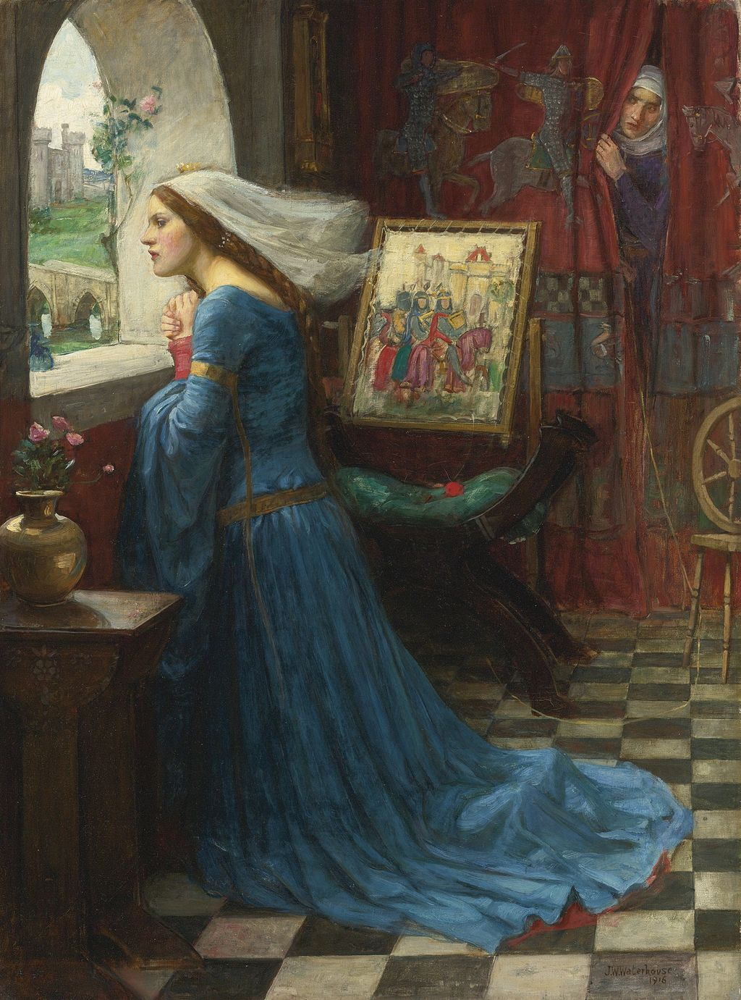

<head>
<meta charset="UTF-8" />
<meta name="keywords" content="drawing, painting" />
<meta name="description" content="drawings by Sunjy" />
<title>Sunjy</title>
<link rel="shortcut icon" type="image/x-icon" href="../../mImages/mCommon/favicon.ico" media="screen" />
<link rel="stylesheet" type="text/css" href="../../mCsses/mCommon/mCssA.css" />
<link rel="stylesheet" type="text/css" href="../../mCsses/mCommon/mCssB.css" />
<link rel="stylesheet" type="text/css" href="../../mCsses/mCommon/mCssC.css" />
<link rel="stylesheet" type="text/css" href="../../mCsses/mCommon/mCssD.css" />
<link rel="stylesheet" type="text/css" href="../../mCsses/mContent/mCssA.css" />
<link rel="stylesheet" type="text/css" href="../../mCsses/mContent/mCssB.css" />
<link rel="stylesheet" type="text/css" href="../../mCsses/mContent/mCssC.css" />
<link rel="stylesheet" type="text/css" href="../../mCsses/mContent/mCssD.css" />
</head>
<script type="text/javascript" src="../../mScripts/mContent/mContentAA.js" /></script>
<script type="text/javascript" src="../../mScripts/mContent/mContentAB.js" /></script>
<script type="text/javascript" src="../../mScripts/mContent/mContentAC.js" /></script>
<script type="text/javascript" src="../../mScripts/mContent/mContentAD.js" /></script>
<script type="text/javascript"></script> 
<script type="text/javascript">
document.write('<div class="mImgAbsolute"></div>');
/*
document.write('<p class="mFontSizeBColor" />From a white paper...</p>');
document.write('<table class="center"><tr><td>');
document.write('');
document.write('</td></tr></table>');
*/
</script>


<script type="text/javascript">
document.write('<p class="mFontSizeBColor" />Fair Rosamund</p>');
document.write('<p class="mFontSizeSColor" />By John William Waterhouse, 1916. <br><br>Rosamund Clifford<br><br>Rosamund Clifford (1150 – 1176), often called “The Fair Rosamund,” was famed for her beauty and was a mistress of King Henry II of England. She was reputed to be Henry’s greatest love.<br><br>Henry had met her in 1166 and had begun their liaison in 1173. The king had many mistresses, but although he treated earlier liaisons discreetly, he flaunted Rosamund. He may have done so to provoke Eleanor into seeking an annulment.<br><br>The traditional story recounts that to conceal his illicit affair from Eleanor; he conducted them within the innermost recesses of a complicated maze, which he caused to be made in his park at Woodstock, Oxfordshire.<br><br>Queen Eleanor heard rumors, and she contrived to penetrate the labyrinth, confronted her rival.<br><br>Upon Rosamund’s death, rumors soon spread, perhaps assisted by Henry’s camp, that Eleanor had poisoned Rosamund.<br><br>Henry loved Rosamund and donated substantial money to the Godstow Nunnery, where Rosamund was buried.<br><br>The story Rosamund Clifford’s death was handed down for generations and gradually embroidered with various additional details, more or less scandalous.<br><br>Rosamund Clifford was reputedly one of the great beauties of the 12th century and inspired ballads, poems, stories, and paintings.<br></p>');
document.write('<table class="center" /><tr><td>');
document.write('<br>Rosamund Clifford<br><br>Rosamund Clifford (1150 – 1176), often called “The Fair Rosamund,” was famed for her beauty and was a mistress of King Henry II of England. She was reputed to be Henry’s greatest love.<br><br>Henry had met her in 1166 and had begun their liaison in 1173. The king had many mistresses, but although he treated earlier liaisons discreetly, he flaunted Rosamund. He may have done so to provoke Eleanor into seeking an annulment.<br><br>The traditional story recounts that to conceal his illicit affair from Eleanor; he conducted them within the innermost recesses of a complicated maze, which he caused to be made in his park at Woodstock, Oxfordshire.<br><br>Queen Eleanor heard rumors, and she contrived to penetrate the labyrinth, confronted her rival.<br><br>Upon Rosamund’s death, rumors soon spread, perhaps assisted by Henry’s camp, that Eleanor had poisoned Rosamund.<br><br>Henry loved Rosamund and donated substantial money to the Godstow Nunnery, where Rosamund was buried.<br><br>The story Rosamund Clifford’s death was handed down for generations and gradually embroidered with various additional details, more or less scandalous.<br><br>Rosamund Clifford was reputedly one of the great beauties of the 12th century and inspired ballads, poems, stories, and paintings.<br>" />');
document.write('</td></tr></table>');
</script>


